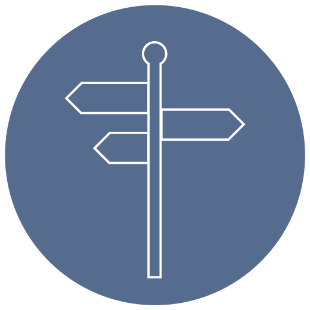
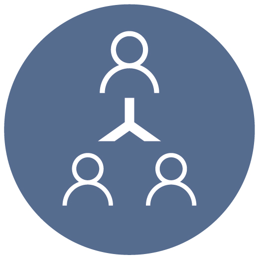
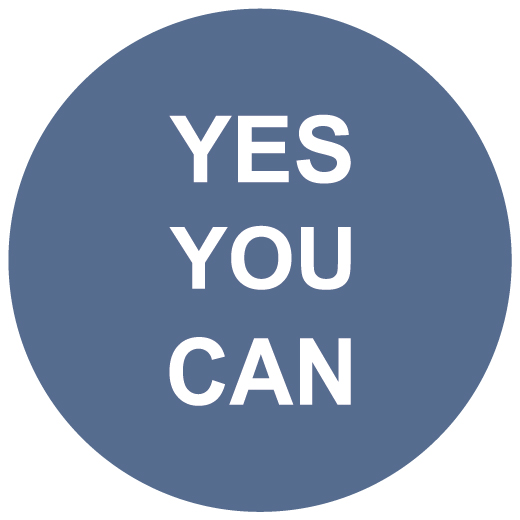

COACHING PARA TU TRANSFORMACIÓN PERSONAL Y ORGANIZACIONAL
COACHING ORGANIZACIONAL

Considero que llegó ya el momento de cambiar.
Necesito liderar a mí grupo, ¿seré un buen líder para mi gente?

¿Cómo gestionaría mejor a mi equipo? ¿qué perfiles me pueden acompañar?
Me está faltando colaboración, ¿qué puedo hacer? ¿qué no estoy teniendo en cuenta?

No me siento seguro, perdí confianza en mí.
El estrés está acabando con mi efectividad profesional, ¿qué puedo hacer distinto?